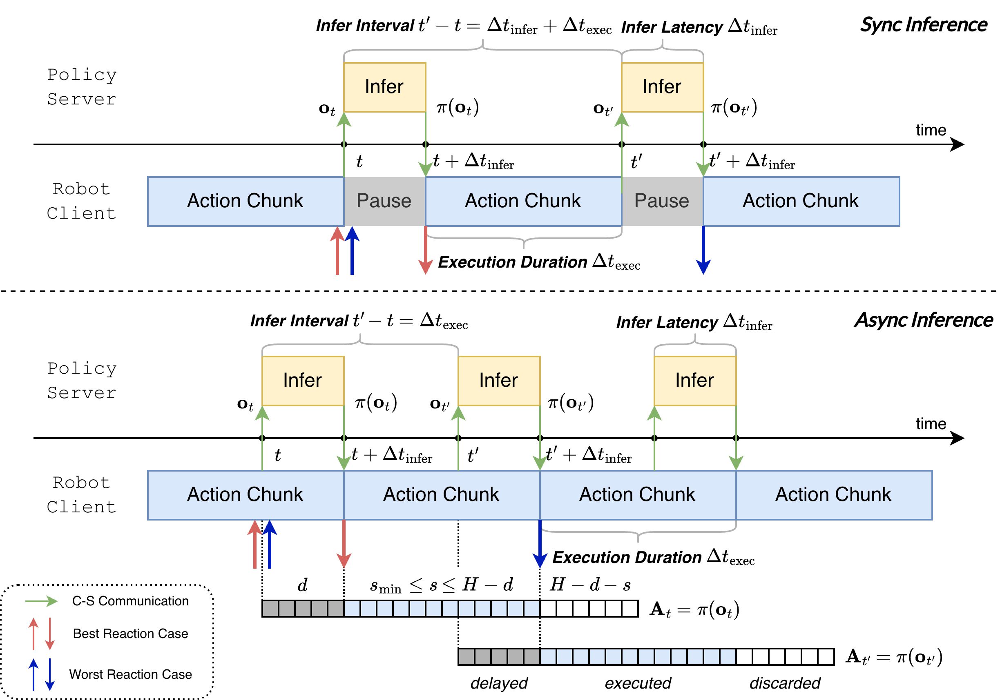
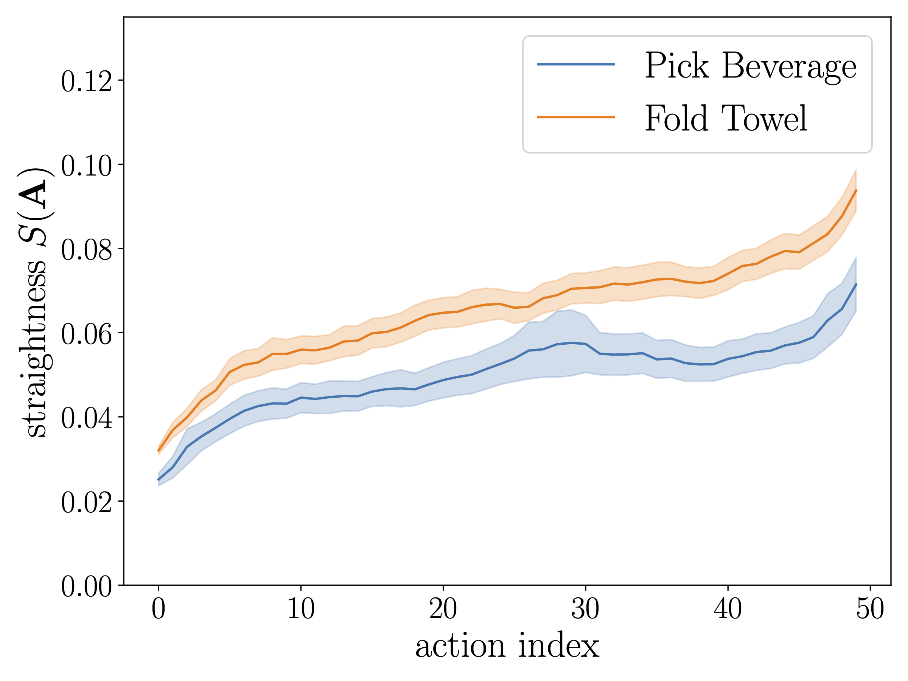
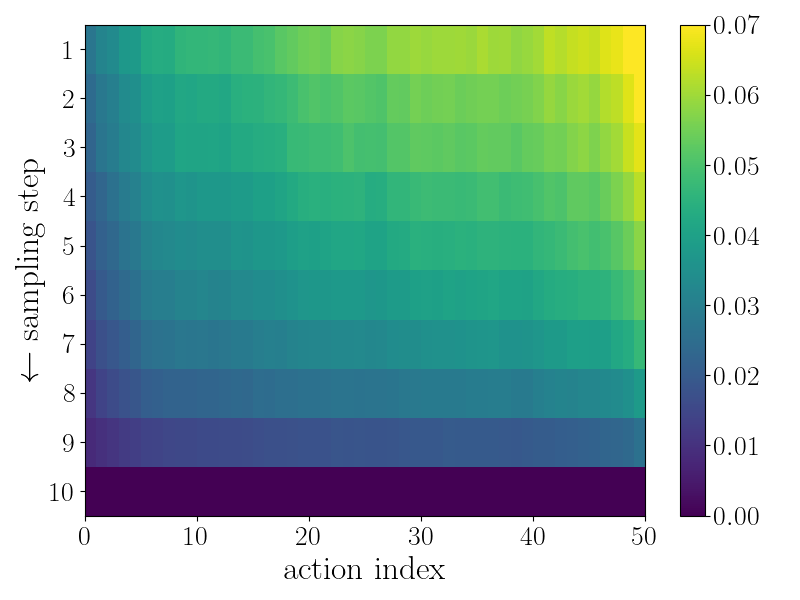
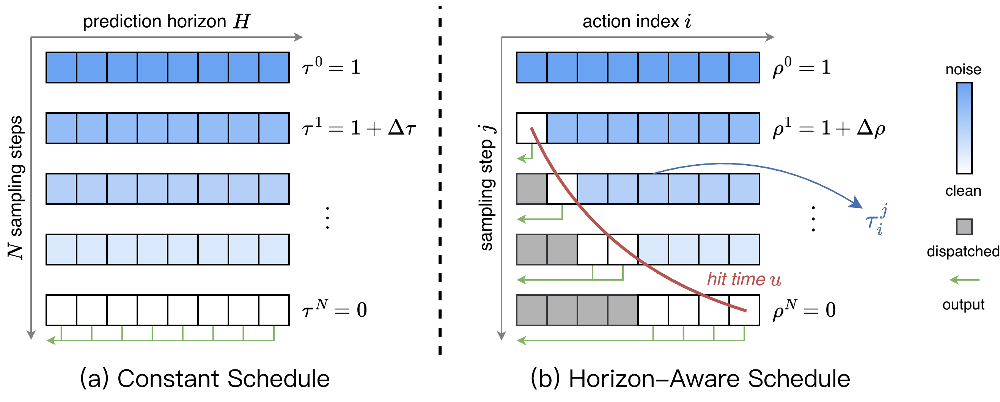
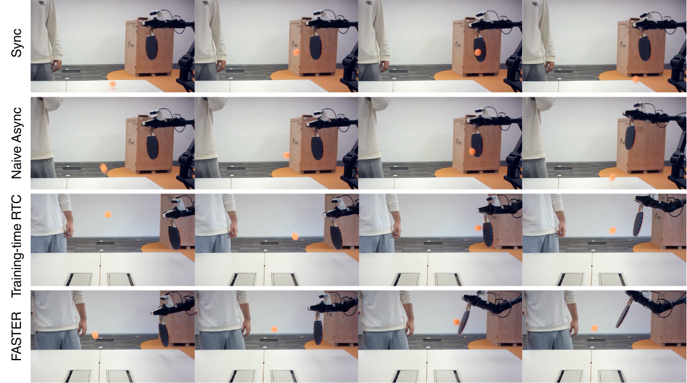

Real-time execution is crucial for deploying Vision-Language-Action (VLA) models in the physical world. Existing asynchronous inference methods primarily optimize trajectory smoothness, but neglect the critical latency in reacting to environmental changes. By rethinking the notion of reaction in action chunking policies, this paper presents a systematic analysis of the factors governing reaction time. We show that reaction time follows a uniform distribution determined jointly by the Time to First Action (TTFA) and the execution horizon. Moreover, we reveal that the standard practice of applying a constant schedule in flow-based VLAs can be inefficient and forces the system to complete all sampling steps before any movement can start, forming the bottleneck in reaction latency. To overcome this issue, we propose Fast Action Sampling for ImmediaTE Reaction (FASTER). By introducing a Horizon-Aware Schedule, FASTER adaptively prioritizes near-term actions during flow sampling, compressing the denoising of the immediate reaction by tenfold (e.g., in π0.5 and X-VLA) into a single step, while preserving the quality of long-horizon trajectory. Coupled with a streaming client-server pipeline, FASTER substantially reduces the effective reaction latency on real robots, especially when deployed on consumer-grade GPUs. Real-world experiments, including a highly dynamic table tennis task, prove that FASTER unlocks unprecedented real-time responsiveness for generalist policies, enabling rapid generation of accurate and smooth trajectories.

In the conventional synchronous pipeline, the robot pauses until the policy server completes inference, resulting in unavoidable execution gaps. In contrast, the asynchronous pipeline allows the next inference request to be launched before the current action chunk is fully executed, thereby eliminating inter-chunk pauses and improving motion continuity. However, existing asynchronous inference methods mainly focus on trajectory smoothness, while overlooking another essential dimension of real-time embodied intelligence: reaction.
| Mode | Infer Interval | \(\Delta t_{\text{react}} \sim D_{\text{react}}\) | \(\mathbb{E}[\Delta t_{\text{react}}]\) | \(s_{\min}\) |
|---|---|---|---|---|
| Sync | \(\Delta t_{\text{infer}} + \Delta t_{\text{exec}}\) | \(\mathcal{U}\!\left(\Delta t_{\text{infer}}, 2 * \Delta t_{\text{infer}} + \Delta t_{\text{exec}}\right)\) | \(1.5 * \Delta t_{\text{infer}} + 0.5 * \Delta t_{\text{exec}}\) | \(1\) |
| Async | \(\Delta t_{\text{exec}}\) | \(\mathcal{U}\!\left(\Delta t_{\text{infer}}, \Delta t_{\text{infer}} + \Delta t_{\text{exec}}\right)\) | \(\Delta t_{\text{infer}} + 0.5 * \Delta t_{\text{exec}}\) | \(\left\lceil \Delta t_{\text{infer}} / \Delta t_{\text{ctrl}} \right\rceil\) |
We show that reaction time is not a trivial constant determined solely by inference latency. Instead, it should be modeled as a random variable following a uniform distribution, due to the stochastic timing of external events relative to the robot controller. We further demonstrate that existing asynchronous methods are inherently limited, and that truly responsive behavior requires joint improvements in both perception-execution latency and the frequency of the inference-execution cycle.


Existing flow-based VLAs typically employ a constant timestep schedule over the entire action chunk, allocating the same number of sampling steps to each action. Under this design, the full multi-step denoising process must be completed before any action can be executed, substantially increasing reaction latency. However, the causal structure of physical interaction makes near-term actions more strongly constrained by current observations, such that they typically reside in a much narrower solution space. Our pilot study validates this intuition: early actions exhibit straighter interpolation trajectories and can recover accurate clean actions within only a few sampling steps.
If earlier actions are easier to predict, can flow-based VLAs assign fewer sampling steps to these latency-critical actions and thereby enable immediate reaction?

FASTER introduces a Horizon-Aware Schedule (HAS) that prioritizes immediate actions during flow sampling. Specifically, HAS allocates a more aggressive sampling schedule to near-term actions while maintaining a slower schedule for long-horizon ones. As a result, the model can produce the immediate action with as little as one sampling step, without compromising long-horizon trajectory quality.
Beyond algorithmic acceleration, FASTER further incorporates a streaming client-server interface, through which early actions can be dispatched to the robot controller as soon as they become available. While the robot executes these initial actions, the VLA model continues refining subsequent actions in parallel and progressively replenishes the client's action buffer.
| Model | Method | RTX 4090 | RTX 4060 | ||||
|---|---|---|---|---|---|---|---|
| \( \mathrm{TTFA}\downarrow \) | \( s_{\min}\downarrow \) | \( \mathbb{E}[\Delta t_{\text{react}}]\downarrow \) | \( \mathrm{TTFA}\downarrow \) | \( s_{\min}\downarrow \) | \( \mathbb{E}[\Delta t_{\text{react}}]\downarrow \) | ||
| π0.5 | Sync | \(80.0_{\pm 1.6}\text{ms}\) | \(3\) | \(170.0\text{ms}\) | \(303.3_{\pm 0.8}\text{ms}\) | \(10\) | \(621.6\text{ms}\) |
| Async | \(80.0_{\pm 1.6}\text{ms}\) | \(3\) | \(130.0\text{ms}\) | \(303.3_{\pm 0.8}\text{ms}\) | \(10\) | \(470.0\text{ms}\) | |
| FASTER | \(\mathbf{62.1}_{\pm 3.1}\text{ms}\) | \(3\) | \(\mathbf{112.1}\text{ms}\) | \(\mathbf{238.6}_{\pm 1.9}\text{ms}\) | \(\mathbf{8}\) | \(\mathbf{371.9}\text{ms}\) | |
| Speedup | \(\mathbf{1.29\times}\) | - | \(\mathbf{1.16\times}\) | \(\mathbf{1.27\times}\) | \(\mathbf{1.25\times}\) | \(\mathbf{1.26\times}\) | |
| X-VLA | Sync | \(113.7_{\pm 0.8}\text{ms}\) | \(4\) | \(237.2\text{ms}\) | \(399.5_{\pm 8.5}\text{ms}\) | \(12\) | \(799.2\text{ms}\) |
| Async | \(113.7_{\pm 0.8}\text{ms}\) | \(4\) | \(180.4\text{ms}\) | \(399.5_{\pm 8.5}\text{ms}\) | \(12\) | \(599.5\text{ms}\) | |
| FASTER | \(\mathbf{44.8}_{\pm 0.3}\text{ms}\) | \(\mathbf{2}\) | \(\mathbf{78.1}\text{ms}\) | \(\mathbf{129.2}_{\pm 2.4}\text{ms}\) | \(\mathbf{6}\) | \(\mathbf{229.2}\text{ms}\) | |
| Speedup | \(\mathbf{2.54\times}\) | \(\mathbf{2\times}\) | \(\mathbf{2.31\times}\) | \(\mathbf{3.09\times}\) | \(\mathbf{2\times}\) | \(\mathbf{2.62\times}\) | |
FASTER delivers substantial improvements in reaction speed across all scenarios, especially when deployed on consumer-grade GPUs. In particular, it achieves a 3x reduction in Time to First Action (TTFA) on an RTX 4060, highlighting its practical advantage under resource-constrained deployment.

The table tennis task highlights the importance of immediate reaction under fast dynamics. FASTER consistently tracks and responds more effectively than the baselines across different GPU settings, demonstrating that faster action sampling directly translates into stronger real-world responsiveness. To the best of our knowledge, FASTER is the first method to enable a generalist VLA model to play table tennis on an RTX 4060.
On everyday tasks such as Pick Beverage and Fold Towel, FASTER achieves better or comparable completion scores and rollout durations relative to the baselines. These results highlight an important insight: task performance is determined not only by action accuracy, but also by the quality of real-time interaction with the physical world. Although accelerated sampling may introduce slight degradation in action prediction, FASTER strikes a more effective balance between responsiveness and accuracy.
| Method | LIBERO | CALVIN ABC→D | |||||||||
|---|---|---|---|---|---|---|---|---|---|---|---|
| Spatial | Object | Goal | 10 | Avg. | 1 | 2 | 3 | 4 | 5 | Avg. Len | |
| π0.5 | 98.8 | 98.2 | 98.0 | 92.4 | 96.9 | 94.2 | 88.7 | 85.7 | 83.2 | 79.5 | 4.313 |
| π0.5+FASTER | 98.6 | 97.8 | 97.8 | 91.6 | 96.5 | 95.1 | 89.1 | 85.0 | 81.9 | 78.1 | 4.292 |
| X-VLA | 97.8 | 99.4 | 97.8 | 96.8 | 98.0 | 95.7 | 89.8 | 82.4 | 77.0 | 70.2 | 4.151 |
| X-VLA+FASTER | 99.0 | 99.2 | 97.6 | 92.0 | 97.0 | 97.7 | 91.1 | 81.2 | 72.1 | 63.7 | 4.058 |
Although simulation benchmarks are not directly affected by inference latency, they provide a useful testbed for measuring any capability loss introduced by fast sampling. We find that FASTER preserves the original model performance with only marginal degradation on both benchmarks, indicating that HAS remains competitive despite its aggressive action-sampling strategy.